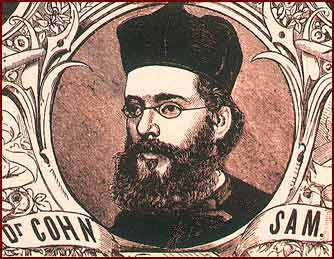

Sámuel Kohn was a historian and the professor of homiletics at the Rabbinical Seminary (1899–1905); he participated in the Congress. He was the first to write the history of the Jews of Hungary until 1526.